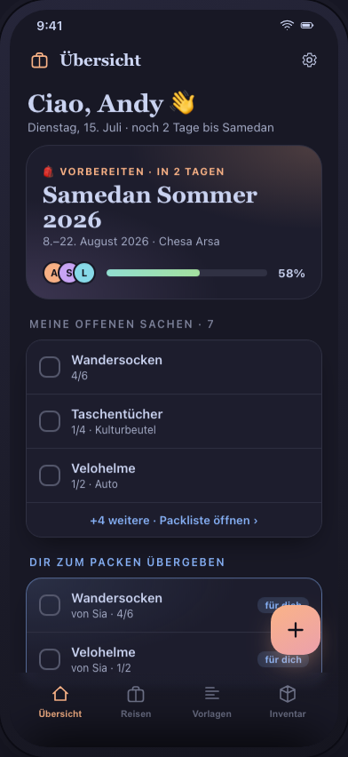
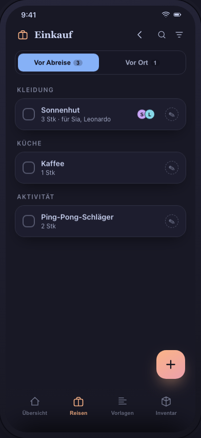
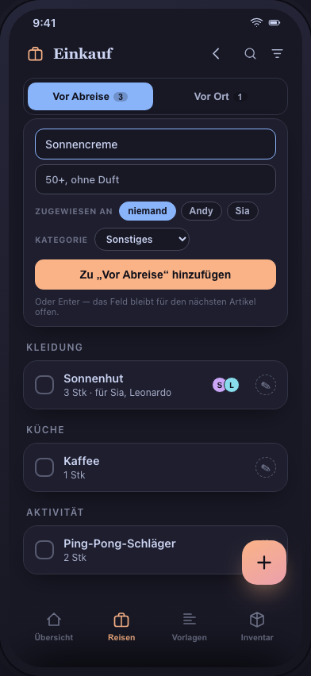
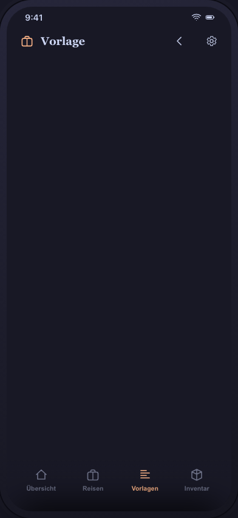
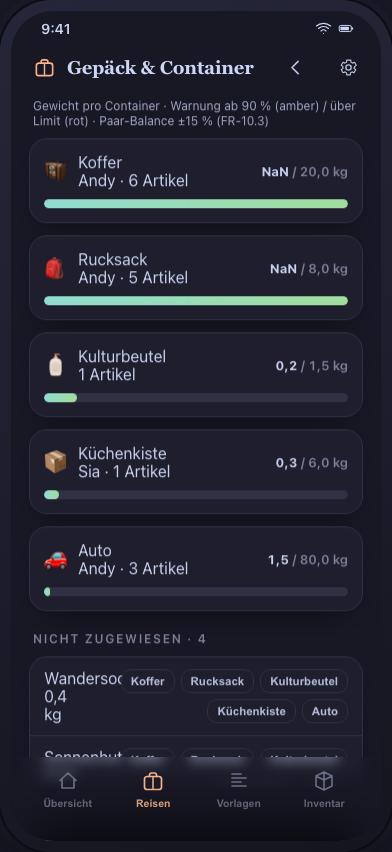

JIT-Pack · UI concept · status 2026-08-08
Screen overview — what is testable?
Every screen of the UI spec (M1–M20) and where it stands in the clickable concept prototype.
Open the prototype at http://<host>:3000 — green cards are fully worked out and waiting for your test;
the checkboxes are your check points. The screenshots show the current prototype — they are regenerated with node dev-docs/assets/shoot-screens.mjs so they cannot go stale; tapping an image opens it large.
12 / 19 screens in the concept · plus the phase hub · M13 removed
concept finished — please test
concept core (new, no M number)
still open
removed (not part of the product)
Concept core
HUBPhase hub — a trip as a holiday with four phasesCONCEPT CORE
Path: tab „Reisen“ → tap Toskana → phase bar at the top
- Switch between the four phases: Planen · Vorbereiten · Unterwegs · Danach
- Vorbereiten is fully worked out (→ M4 ff.); Planen (idea board), Unterwegs (day plan/cash) and Danach (review statistics) are deliberately only sketches of the North Star vision
Finished in the concept — please test
M1Übersicht (dashboard)TEST
Path: tab „Übersicht“ (start)

- „Meine offenen Sachen“ — the checkbox ticks off, the counter counts live
- „Dir zum Packen übergeben“ — blue card (Kinderbücher, from Sara)
- Preparations: filter (search field) and tick off, item name → M5
- Hero card → phase hub
M2Trip listTEST
Path: tab „Reisen“

- Search plus status filter (Alle/Aktiv/Geplant/Archiv)
- Series group „◆ Toskana“ with 3 trips, the archive dimmed
- Progress rings per status, tapping a trip → hub
TODO · default sort by date (most recent first), no series grouping as the default — the series becomes an optional view (§3.25, 17.07.).
M3Trip wizard (4 steps)TEST
Path: the ＋ FAB on „Übersicht“ or „Reisen“

- Step 1: date → duration live; the series „Toskana“ fills the empty attribute chips
- Step 2: travelers adult/child; sharing block (editor/admin)
- Step 3: template search and filter; live footer (duplicates, season exclusions, companions)
- Step 4: quantities from the templates plus a one-tap history suggestion; destination checklist opt-out
M4Packing listTEST
Path: trip → „Vorbereiten“ → „Packliste öffnen“


- Header bar (G-12): 🔍 search · filter (count as a badge) · fold — at the top in the app bar, where the gear otherwise sits. On the trip title line: 🛒 shopping (with a count) · 🧳 luggage · 📊 analytics. No more ⋯. Press-and-hold shows the name as a bubble
- Filter sheet: Gruppieren nach · Erledigte · Person / Kategorie / Beschaffung / Gepäck / Merkmale. OR within a group, AND between groups; active values as removable chips under the head
- Folding groups: tap the header row → the group collapses onto its own row and shows „N offen“ there; the fold icon collapses everything
- Packed rows disappear, „Erledigte“ brings them back greyed out — with „gepackt von … · heute 14:32“. A fully packed group disappears entirely
- Swipe right = pack · left = skip · in the skipped section, right = bring back
- Stepper (8/10) vs. checkbox; amber = packed with an open preparation. Ticking the last preparation → the item counts as done and leaves the list
- Quick-add: the ＋ FAB opens and focuses it, with a visible confirm button; a „Pro Person“ mode with a quantity per traveler (Andy 2 · Leo 3 · Mia 0 → one item as a cluster, FR-25.8/25.1)
- An honest empty state: „Alles gepackt 🎉“ only with no search and no filter — otherwise „Keine Treffer“ with a reset
- The sections „Vorbereitung“ and „Bewusst übersprungen“ unfold
HEADER DECIDED (17.07.) · a slim one-line header (trip · packed · weight · prep), tools behind ⋯; scrolling down hides the header and the trip name and presence move into the top bar (collapsing header), scrolling up brings them back; quick-add via the ＋ FAB; a flatter app bar (one-line title, a discreet line logo). Done (17.07.): packed rows fall out of the list, an „N gepackte anzeigen“ toggle brings them back greyed out (45 %); „gepackt mit offener Vorbereitung“ stays visible (FR-25.2). Full-screen packing (17.07.): the bottom tab bar is hidden on M4 (full screen), the ＋ FAB moves down, back is via ‹ (chosen from 3 variants). Per-person decided (17.07.): per-person items as a named cluster — the item name once as a sub-head with
done/total, and under it one indented child row per traveler (avatar + name + its own checkbox/stepper, packable individually); when grouping by person (or for a single instance) it falls back to a flat „Artikel · Person“ row; it follows the hiding rule FR-25.2 (chosen from 2 variants, A flat / B cluster). Packer avatar decided (17.07.): whoever packed appears as an avatar at the right edge of the row — set apart from the traveler avatar (left, „für wen“) by a green ring and a ✓ badge; visible as soon as anything is packed (a partly packed stepper row included), and per packed child row in a cluster; it replaces the previous „gepackt von …“ subtitle (FR-25.3). Mode & filter decided (18.07.): the procurement mode as a glyph only for the buying modes (🛒 Vorher · 📍 Vor Ort) — 🧳 packing stays icon-free so the buying exceptions stand out; once at the head in a cluster. Below it a multi-select filter bar (Alle · 🧳 · 🛒 · 📍 with live counts) whose mode pills combine (e.g. Vorher + Vor Ort), and „Alle“ resets. The late packer stays a flag of its own, ⏰, orthogonal to the mode (FR-25.4). That settles §3.25 for M4 completely. M4 closed (08.08.): the mode pill bar and the grouping bar have been absorbed into the facet filter (FR-25.11) and the ⋯ overflow is gone — the three trip views sit as icons on the title line, and search/filter/fold at the top in the app bar (G-12). Plus: foldable groups with „N offen“ on the header row (FR-25.16), „gepackt von … · wann“ on revealed rows (FR-25.17), search in M4, and three defects found while testing fixed — the empty state reported „Alles gepackt“ for a fruitless search (FR-25.11e was worded too narrowly), the open preparation was stored as a number instead of derived from the tasks (an item could never become done, FR-7.3), and the FAB permanently covered the last row (FR-25.11h).M5Item detail (sheet)TEST
Path: tap a row in M4 · close: pull the handle down

- Tidied via progressive disclosure (18.07.): level 1 = head + compact overview chips + preparation + comments (with an input field); everything else behind „Details ▾“
- „Verwendet von“ removed (18.07.): „Wer braucht das?“ instead — Gemeinsam / a multi-select of travelers; adding a person creates a packing row of their own (e.g. sunglasses for Leonardo → FR-25.1/25.10)
- Delegation is revocable: „Gepackt von“ has a „niemand“; mode labels 🧳🛒📍, the late packer as an ⏰ flag
- The mode Vorher kaufen → „Jetzt gekauft“ with an undo snackbar; a history sparkline; adding and ticking preparations; a comment „als Aufgabe“ → preparation
Done (§3.25, 18.07.): revocable delegation, a comment input field, containers optional behind „Details“, mode labels plus the late-packer flag, progressive disclosure. Added (08.08.): per-person items show their sum as a plain display field (0/3) rather than a stepper — „+1“ could not say for whom — and under it one row per person with its own checkbox/stepper (FR-25.14). No save button: it saves continuously, shown as yellow „wird gespeichert“ → green „gespeichert“; deliberately separate from G-2, which means the server exchange only (FR-25.15). — The shopping „für wen“ (FR-25.6) was resolved on 07.08., see M6. Prototype bugfix (18.07.): `bindPack` bound `[data-act]` document-wide and overwrote the sheet handlers (now scoped to the M4 container).
M6ShoppingTEST
Path: the 🛒 icon on the trip title line in M4


- Tabs „Vor Abreise“/„Vor Ort“ with real counts; 🔍 and the filter at the top in the app bar (G-12), the search field appears only on tapping
- Filter by Zugewiesen an / Für wen / Kategorie — the same sheet as M4, only different facets
- A per-person item as one buying row with a sum and the recipients („Sonnenhut 3 Stk · für Sia, Leonardo“) — derived, not entered (FR-25.6). Ticking it off completes every instance
- Zugewiesen an (who buys) and a description — in the row sheet and directly when adding; the assignment stays put for the next item
- The category when adding, usually automatically: completion from the item master carries it along
- Ticking off before departure → the item moves to the packing list (snackbar); „Erledigte“ in the filter brings bought things back — greyed out, with „gekauft von … · wann“, and tapping again undoes it
- „Vor Ort“: the series' destination checklist (Feigen, Chianti, Pecorino)
Done (§3.25, 07./08.08.): FR-25.6 resolved — „für wen“ is derived rather than captured again; „zugewiesen an“ is the procurement delegation and a different thing (FR-25.12). Plus the facet filter (FR-25.11g), fields when adding (FR-25.13a), category and autocomplete (FR-25.13b), and revealing bought things again (FR-25.11i/j). Defect found: per-person items in a buying mode did not appear in the shopping list at all (the quantity sat on the instances and the comparison ran against
undefined).M7Template listTEST
Path: tab „Vorlagen“

- Search plus the filter Alle/Meine/Veröffentlicht; a fork chip on other people's
- Position counts live (they change after M8 edits)
M8Template editorTEST
Path: tap a template in M7 · new: the ＋ FAB

- The quantity chip „6ד; tapping a position → the M5 sheet with a quantity stepper
- Formulas removed (FR-1.3/1.5 retired 2026-08-08) — quantities are plain numbers
- Per person/global · mode · dedup max/sum · condition chips
- The publish warning (FR-2.4); someone else's template → read-only plus „Fork erstellen“
- Adding a position: search plus „neu anlegen“ (which also lands in M9)
REDESIGN · the core feature — capturing a position with all its parameters is too heavy. Sensible defaults plus parameters on demand (progressive disclosure); to be mocked again. §3.25 / FR-25.7. + quantities per person type (adult/child, FR-25.9). 17.07.
M9Inventory (master data)TEST
Path: tab „Inventar“

- Multi-tags as chips on every row (new, FR-24.1 proposed)
- The tag filter „Sommer“ shows items across categories
- Grouping by primary tag; a row → M10
TODO · swipe-to-delete directly in the list (specified 17.07., UI-Spec M9): depending on usage the swipe offers „Ausblenden“ (logical) or „Endgültig löschen“ (physical, FR-24.3) plus undo — not in the prototype yet.
M10Item editor (master data)TEST
Path: tap an item in M9 · new: the ＋ FAB

- Assign several tags and create a new tag inline
- Lean: name plus primary tag; weight/price/tags configurable via the eye icon
- Deleting: in use → logical (with an explanatory box) · never used → permanent (FR-24.3 proposed)
M11Luggage & containersTEST
How to find it: packing list → the 🧳 icon on the trip title line. (It used to be buried behind the grouping switch and then behind ⋯ — not found in either test; since 08.08. it has an icon of its own, G-12.)

- Weight bars: green → amber (≥90 %) → red (over the limit)
- Suitcase pair balance (±15 %): starts out of balance
- Assign the unassigned — Trinkwasser (18 kg) → Rucksack = red ⚠
M12AnalyticsTEST
How to find it: packing list → the 📊 icon on the trip title line. (The KPI strip that used to lead here disappeared with the M4 rebuild; since 08.08. it has an icon of its own, G-12.)

- The dimension Person/Kategorie/Gepäck; bars = packed/planned
- Tapping a bar → M4 in that grouping
- The „ohne Gewichtsangabe“ note (quick-add items show up there)
- The series trend (kg per year) plus „Häufig markiert“
Still open
M14Review assistant (after archiving)OPEN
A card stack of proposals from the „Ungenutzt/Fehlt“ flags — the next candidate for the concept. The entry point (the M4 toolbar „Archiv“) shows a placeholder note for now.
M15Import wizard (CSV)OPEN
The legacy spreadsheet import — not yet shown in the concept.
M16Series & destination profileOPEN
The series head in M2 shows a placeholder note for now. Defaults and the destination checklist already take effect in M3/M6, though.
M17SettingsOPEN
The gear at the top right shows a placeholder note for now.
M18Portable import (YAML)OPEN
Preview and merging on a YAML import — not shown.
M19Mode choice (first start)OPEN
The prototype starts straight in the app; the local/server choice already exists for real in the client.
M20AdministrationOPEN
Instance administration — implemented for real, not shown in the concept.
Removed
M13RepackREMOVED
Decision 2026-07-17: not wanted, removed from the product. The spec is withdrawn (PRD §3.11, UI-Spec M13). Out of the prototype (the toolbar now shows „Gepäck“ and „Auswertung“). The code already present in the client (`domain/repack.ts`, `RepackPage.vue`, tests, the `outbound_packed` columns) is removed as a separate code cleanup.
Cross-cutting, to check along the way: the uniform filter bar (search plus chips, ✕ to clear, focus stays while typing)
is mirrored on six lists — M2, M6, M7, M9, wizard step 3, dashboard preparations. In the real app that becomes
one reusable component.
Requirements newly captured in this concept work (all proposed): multi-tags and lifecycle-aware deletion (§3.24, FR-24), packing-screen refinements for M2/M4/M5 (§3.25, FR-25), and multilingualism German plus English, German primary (NFR-4.12) — new screens are built with externalised strings from the start.
This page lives in
Requirements newly captured in this concept work (all proposed): multi-tags and lifecycle-aware deletion (§3.24, FR-24), packing-screen refinements for M2/M4/M5 (§3.25, FR-25), and multilingualism German plus English, German primary (NFR-4.12) — new screens are built with externalised strings from the start.
This page lives in
dev-docs/UI_Concept_Overview.html and is kept up to date on every status change;
a copy sits beside the prototype at :3000/overview.html.